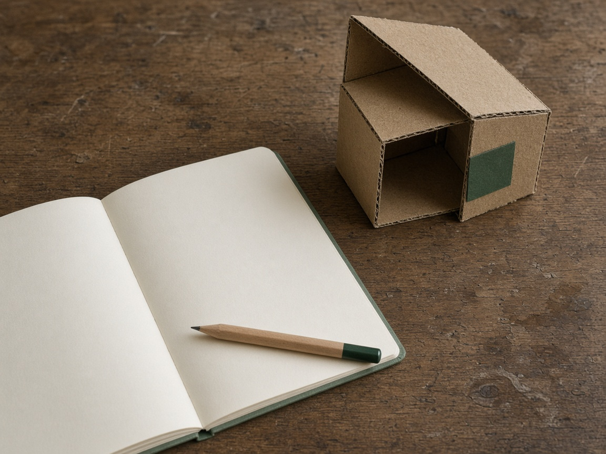

Ready to send
The wording is aimed at the role. Employers, titles, dates, and numbers stay as they were.
Download the PDF.
The wording is aimed at the role. Employers, titles, dates, and numbers stay as they were.
Download the PDF.

The missing required skills, why they matter, what to practice, and one small project.
No rewritten CV. No PDF.